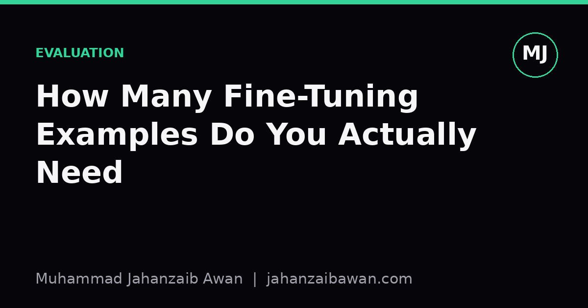

How Many Fine-Tuning Examples Do You Actually Need
The honest answer is fewer than most people assume, but the number depends entirely on what you are asking the model to learn.

The question people ask wrongly
Whenever someone asks me how many examples they need to fine-tune a model, I try to redirect the question before answering it. The number is not a fixed constant like 500 or 5,000. It depends on three things: how narrow the task is, how much the pretrained model already knows about that task, and how you plan to check whether it actually learned anything. Skip that last part and any number you pick is a guess dressed up as an answer.
Here is the intuition I keep coming back to. Fine-tuning is not teaching a model a skill from nothing. It is nudging a model that already has broad competence towards a narrower behaviour: a tone, a format, a classification boundary, a domain vocabulary. The pretrained weights are doing most of the heavy lifting. Your examples are there to specify, not to educate from scratch. That reframing changes the whole question, because specifying a narrow behaviour usually takes far less data than people expect.
Consider a concrete case. Suppose you want a model to always respond to customer emails in a fixed three-part structure: acknowledge the issue, state the resolution, close with a specific sign-off phrase. This is a format and style task, not a reasoning task. In my experience with this kind of structural fine-tuning, somewhere between 50 and 200 well-chosen examples is often enough to get consistent adherence, because the underlying language ability is already there. You are not teaching English or empathy, you are teaching a template.
Why the number explodes for harder tasks
Now change the task. Suppose instead you want the model to correctly classify legal clauses into twelve fine-grained categories that require genuine domain judgement, where the boundaries between categories are subtle and even trained humans disagree sometimes. This is no longer a formatting nudge, it is asking the model to learn a decision boundary that the pretrained weights never explicitly encoded. Here, 200 examples spread across twelve classes gives you perhaps 16 examples per class, which is nowhere near enough to cover the edge cases that make the task hard in the first place.
A useful mental model is to separate surface tasks from judgement tasks. Surface tasks change how the model expresses what it already knows: format, tone, length, vocabulary. Judgement tasks change what the model decides: classification, extraction under ambiguity, ranking by a custom criterion. Surface tasks are cheap, often tens to a couple of hundred examples. Judgement tasks are expensive, often requiring thousands of examples precisely because you are asking the model to internalise a decision function that did not previously exist in its weights, and every class or edge case needs enough coverage to be learnable rather than memorised.
There is a second factor that compounds this: how much the task overlaps with something in the pretraining distribution. A model fine-tuned to write in a formal British English house style is drawing on an enormous amount of formal writing it has already seen. A model fine-tuned to apply a bespoke internal risk scoring rubric your company invented last year has nothing to draw on except your examples. The further the task sits from anything in the pretraining corpus, the more examples you need, and no amount of clever prompting at inference time will substitute for that if the behaviour genuinely needs to be learned rather than elicited.
The number is meaningless without the right test
Here is the part that gets skipped most often, and it is the part I care about most. Whatever number of examples you settle on, it is worthless information unless you have a held-out test set that genuinely reflects the deployment scenario and contains no leakage from the training examples. I have seen fine-tuning projects report excellent accuracy on a test split that was drawn from the same batch of documents as the training data, sharing authors, templates, or even near-duplicate paragraphs. The model was not learning the task, it was recognising the source.
A concrete check I always apply: split by the natural grouping unit before splitting by row. If your examples come from 40 customer accounts, split by account, not by individual email, otherwise the model can learn account-specific quirks that leak across the split and inflate your apparent performance. The same logic applies to time: if the task has any temporal structure, split chronologically and test on the most recent slice, because that is the only split that resembles what deployment will actually look like, where the model sees genuinely new data it could not have memorised patterns from.
Once the split is honest, the practical way to find your minimum viable example count is to fine-tune on increasing subsets, say 50, 150, 400, 800, and 1,500 examples, and plot test performance against size. If the curve is still climbing steeply at your largest subset, you need more data, full stop. If it has flattened, you have probably found your number, and further examples are likely to help marginally at best while costing you in labelling effort and training time. This learning curve is the actual answer to the question, not a number pulled from a blog post, including this one.
A practical takeaway
If you need a rule of thumb to start with, I would say this: for format and style nudges, start around 100 examples and check the learning curve. For genuine judgement tasks with several classes or subtle distinctions, start around 1,000 and expect to need more once you see where the model still fails. But treat both numbers as a starting hypothesis, not a target. The only reliable way to know you have enough examples is a leakage-aware test set and a learning curve that has clearly flattened. Everything else is anecdote, including mine.